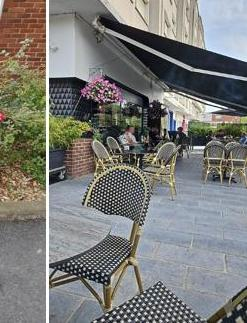
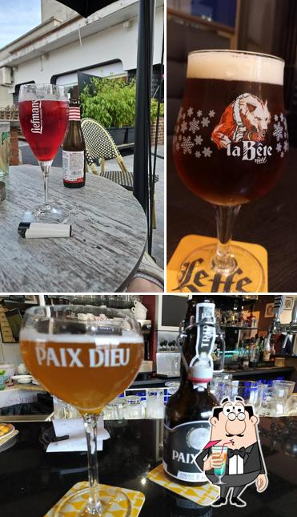
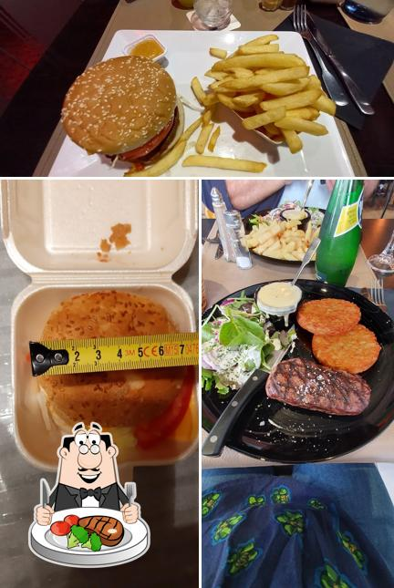
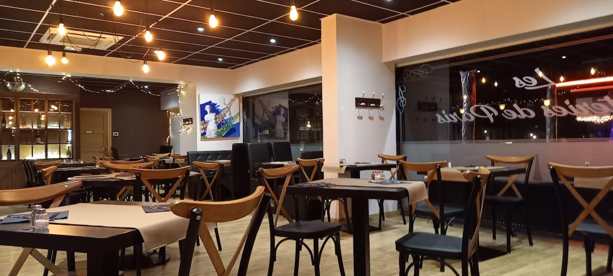

Le café · 36
Le Paris,
le jour se lève ici.
Le premier café en terrasse, l'apéro quand le soleil descend sur la place, une planche à
partager. Une adresse qui compte : 3,9/5 sur 417 avis, deuxième bar de Maubeuge.

La terrasse, face à la place7h30On ouvre tôt — le café du matin, avant tout le monde.

L'heure de l'apéroCocktails, planches, soirées à thème — le café qui fait vivre la place, du matin au soir.
Le restaurant · 40
Les Friteries,
on s'attable pour de bon.
Juste à côté, la brasserie du Nord : carbonnade flamande, welsh, moules
au maroilles, les plats du jour faits maison. La cuisine qui tient au corps, dans le décor bistrot parisien.

Les belles viandesNordLa cuisine ch'ti et la brasserie, sous la Tour Eiffel dorée.

La salle, esprit bistrotLe midi comme le soir — et « après le ciné », le cinéma est juste en face.